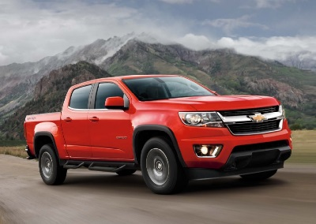
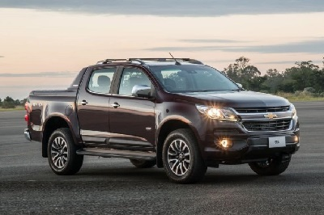
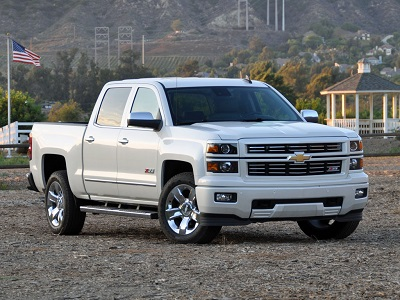
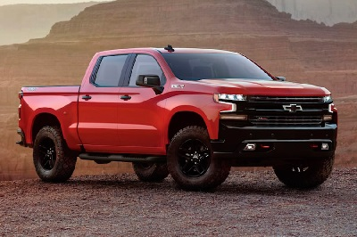

| CAMIONETA |
INFORMACION |
 |
CHEVROLET SILVERADO 1500, Precio$58,510, AIRE ACONDICIONADO, SEMIAUTOMÁTICO (Requerido y solo disponible con (L3B) Motor Turbo 2.7L.),
SISTEMA DE AUDIO, CHEVROLET INFOTAINMENT 3 SISTEMA Pantalla táctil en color de 7 "en diagonal, estéreo AM / FM.
TINTACHA ROJA CAJUN No disponible en modelos 1WT.
DEFOGGER, ELECTRICO DE VENTANA TRASERA, (C49)
EMISIONES
|
|  |
2020 CHEVROLET COLORADO, Precio$167,510, SISTEMA DE AUDIO, CHEVROLET INFOTAINMENT 3 SISTEMA Pantalla táctil en color de 7 "en diagonal, estéreo AM / FM, CONTROL DE CRUCERO, ELECTRÓNICO, AUTOMÁTICO (Incluido y solo disponible con (PCN) WT Convenience Package.) (K34)
EMISIONES, REQUISITOS DEL ESTADO DE CALIFORNIA (YF5)
MOTOR, 3.6L DI DOHC V6 VVT (308 hp [230.0 kW] @ 6800 rpm, 275 lb-ft de torque [373 Nm] @ 4000 rpm) (Estándar en los modelos de Crew Cab Long Box.)
5800 LBS. (2631 KG), RANSMISIÓN.
|
|  |
S10 Cabina Doble, Precio $107,120, ransmisión manual o automática de 6 velocidades
Control de estabilidad y tracción, motor el 2.8L Turbo Diesel, con 200CV y 500 Nm de torque,su motor de 2.8 litros turbo diesel te ofrece 200 caballos de potencia y 500 Nm de torque, Asientos con revestimiento Premium.
Arranque del motor y
Levantavidrios eléctricos, Apple CarPlay es compatible con las demás Apps de tu iPhone,
Controlá todo desde Siri sólo con un toque en el volante.
Retrovisores abatibles con luces indicadoras de dirección.
Faros con regulación de altura.
Llantas de aluminio de 18".
|
|  |
Chevrolet Silverado 2016 Precio $190,120, pantalla táctil de 7 pulgadas, Actualización del Apple Car Play, motor V6 de 4.3 litros con 285 caballos de potencia y 305 libras-pie de torque, un V8 de 5.3 litros con 355 hp y 383 libras-pie, Lo más destacado es que la transmisión automática de ocho velocidades, ofrece de serie características de seguridad tales como el asistente de colisión frontal, alerta de cambio de carril y luces de carreteras automáticas. ofrece de serie características de seguridad tales como el asistente de colisión frontal, alerta de cambio de carril y luces de carreteras automáticas, su predecesor se encuentran en el frontal, las ópticas se han rediseñado generando un aspecto envolvente, las cuales poseen tecnología LED.
|
|  |
Chevrolet Cheyenne High Country M, MOTOR V8 6.2L HASTA 420HP
ícono de sistema administración dinámica de combustible
DESACTIVACIÓN DE CILINDROS PARA EFICIENCIA DE COMBUSTIBLE
ícono para capacidad de arrastre de 4,355 kg
CAPACIDAD DE ARRASTRE DE HASTA 5,489 KG
Torque de hasta 460 lb-pie.
Transmisión automática de hasta 10 velocidades.
Diferentes tipos de suspensión.
Tracción 4x4.
Capacidad de carga: Hasta 953 kg, ste sistema permite al motor operar en 17 patrones distintos, alternando la activación entre 2 y 8 cilindros dependiendo de las condiciones.
|